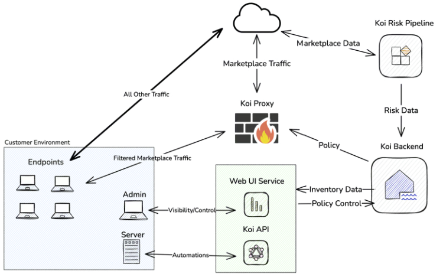
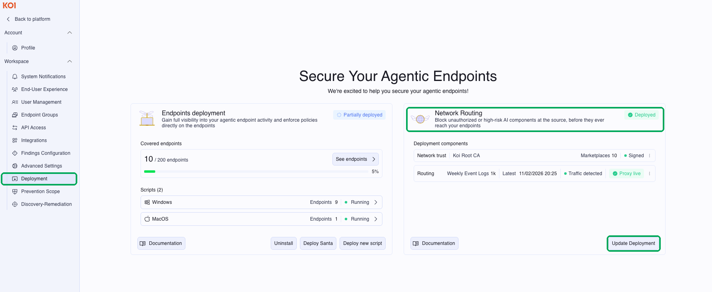
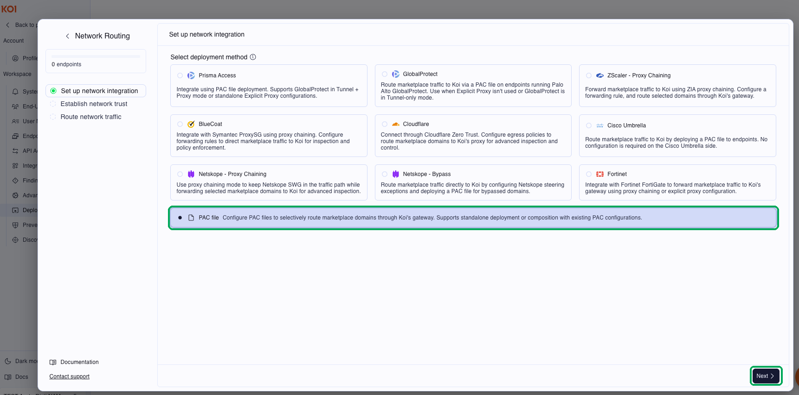
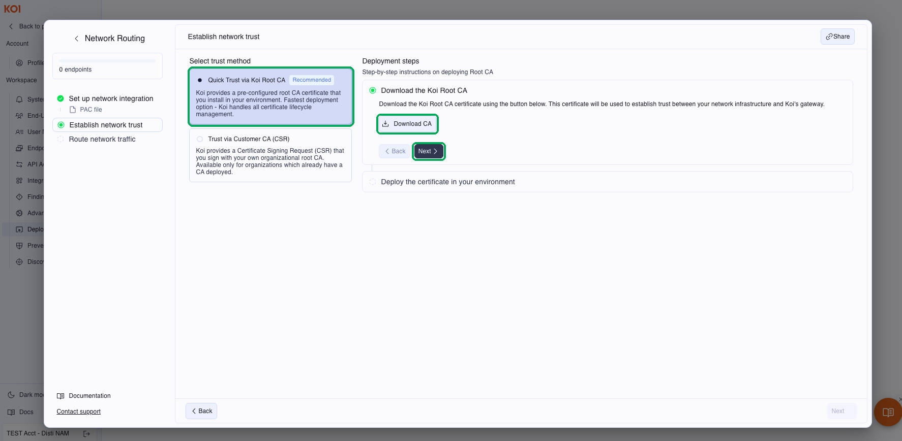
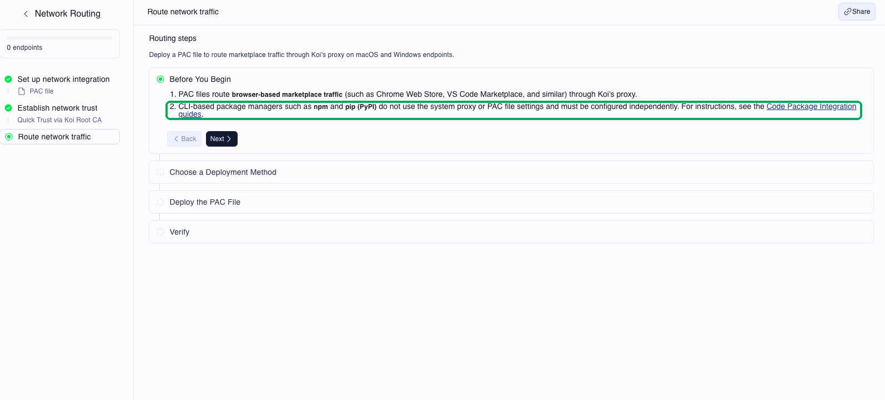
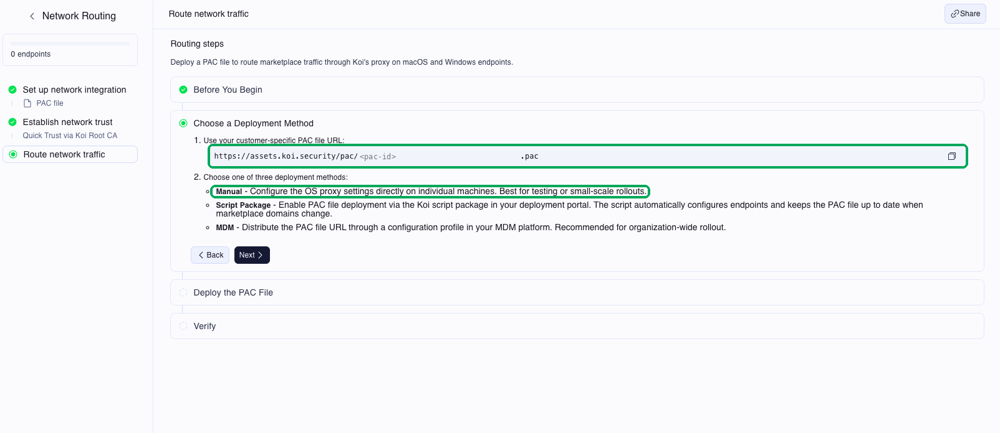
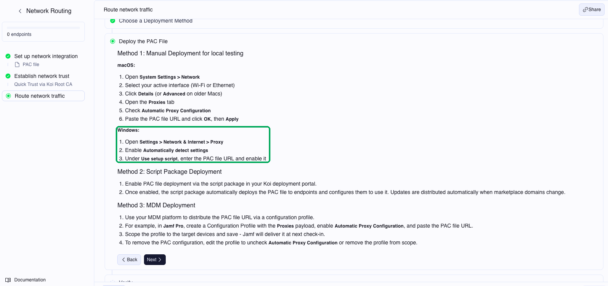
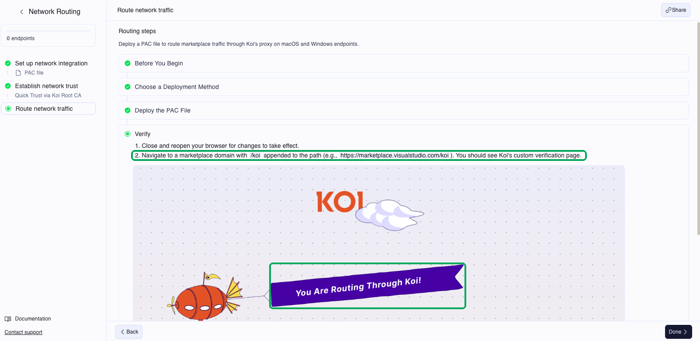

Agentic Endpoint Security (AES)
Hands-on Workshop
Lab Rehberi: Developer rolünde riskli yazılımların kurulum anında nasıl engellendiğini görün, SOC admin rolünde bu kontrolleri yönetin.
Workshop Hakkında
Bu workshop'ta Agentic Endpoint Security'yi (AES) iki farklı rolde kullanacaksınız. Developer rolünde riskli bir extension ya da paketi kurmaya çalıştığınızda neler olduğunu göreceksiniz. SOC admin rolünde ise bu engellemeleri sağlayan ayarları konsolda inceleyip yöneteceksiniz.
Senaryo: Kurgusal Boğaziçi Teknoloji A.Ş. şirketinin güvenlik ekibinde çalışıyorsunuz. EDR çalışıyor ve herhangi bir alarm yok. Ancak son altı ayda developer'lar AI coding agent'ları, VS Code ve browser extension'larını ve MCP server'ları kendi başlarına kurmaya başladı. Yönetim şu soruların cevabını istiyor: "Makinelerde neler kurulu, bunlar nelere erişiyor ve riskli bir şey kurulmak istendiğinde engelleyebiliyor muyuz?"
| Rol | Nerede çalışır | Ne yapar |
|---|---|---|
| DEVELOPER | Lab makinesi (RDP) | Extension ve paket kurar, engellenen kurulumlar için approval talebi gönderir |
| SOC ADMIN | AES konsolu (browser) | Inventory'yi ve riskleri inceler, policy'leri yönetir, approval taleplerini değerlendirir, remediation başlatır |
Her katılımcı tek başına çalışır ve iki rolü de kendisi üstlenir. Her katılımcıya bir lab makinesi ve AES konsolunda kendi endpoint grubu verilir. Bölüm 8'in sonundaki AI agent örneği eğitmen tarafından canlı olarak gösterilir.
| # | Bölüm | Rol |
|---|---|---|
| 0 | Hazırlık | DEVELOPER + SOC ADMIN |
| 1 | Güvenli extension kurulumu | DEVELOPER |
| 2 | Riskli extension ve Request Approval | DEVELOPER → SOC ADMIN |
| 3 | npm paketi engelleme | DEVELOPER |
| 4 | Inventory: Shadow AI keşfi | SOC ADMIN |
| 5 | Risk analizi | SOC ADMIN |
| 6 | Guardrails, policy'ler ve Impact Check | SOC ADMIN |
| 7 | Remediation | SOC ADMIN → DEVELOPER |
| 8 | Runtime: AI coding agent | SOC ADMIN + Demo |
| 9 | Threat Intel: Threat Center | SOC ADMIN |
| 10 | Kapanış |
0. Hazırlık
Bu bölümde lab makinenize bağlanacak, AES konsoluna giriş yapacak ve marketplace trafiğini AES üzerinden geçirmek için gereken sertifika ve proxy ayarlarını AES konsolundaki adımları izleyerek kendiniz yapacaksınız.
0.1 Lab makinesi
- DEVELOPER Size verilen RDP adresi ve kullanıcı bilgileriyle lab makinesine bağlanın.
- DEVELOPER Masaüstündeki Proje Terminali'ni açın ve makinenin hostname'ini not alın. Konsolda makinenizi bu adla bulacaksınız.
hostname- DEVELOPER AES servisinin çalıştığını kontrol edin. Bu rehberdeki tüm komutlar masaüstündeki komutlar.txt dosyasında da bulunur:
Get-Service | Where-Object { $_.DisplayName -like "*Koi*" }Servisin durumu Running olmalıdır.
NotAES endpoint'e klasik bir agent olarak kurulmaz. Okunabilir bir script package olarak çalışır ve inventory bilgisini belirli aralıklarla toplar. Script'in içeriğini isterseniz açıp inceleyebilirsiniz.
0.2 AES konsoluna giriş
- SOC ADMIN Lab makinesinin masaüstündeki AES Konsol kısayolunu açın. SSO yerine e-posta ile giriş seçeneğini kullanın ve workshop kaydında verdiğiniz e-posta adresini yazın. E-postanıza gelen doğrulama bağlantısına tıklayın ve konsolun açılmasını bekleyin.
Giriş yaptığınızda Dashboard açılır. Bu ekranda ortamın özeti yer alır: tespit edilen malware'ler, açık remediation'lar ve approval talepleri, toplam öğe ve endpoint sayısı, item type ve platform dağılımı, risk seviyeleri ve AES'in otomatik olarak engellediği öğeler.

- SOC ADMIN Endpoint listesinde makinenizi hostname'iyle bulun.
- SOC ADMIN Makinenizin size ait gruba (ör.
AES-USER01) atandığını kontrol edin. Workshop boyunca oluşturacağınız policy'ler yalnızca bu gruba uygulanır ve diğer katılımcıları etkilemez.
NotKonsola giriş yapabilmek için e-postanıza erişebilmeniz gerekir. Workshop'tan önce kurumsal e-postanızı telefonunuzdan ya da dizüstü bilgisayarınızdan açabildiğinizi kontrol edin. Doğrulama e-postası birkaç dakika içinde gelmezse spam klasörüne bakın.
0.3 Network Routing: sertifika ve proxy ayarı
Chrome Web Store ve VS Code Marketplace gibi marketplace'lerin trafiği bir PAC dosyasıyla AES proxy'sine yönlendirilir. Proxy'nin bu trafiği inceleyebilmesi için makinenin AES Root CA sertifikasına güvenmesi gerekir. Sertifikayı ve PAC dosyasının adresini AES konsolundan alacaksınız.
Aşağıdaki şema AES'in nasıl çalıştığını özetler. Endpoint'lerden çıkan marketplace trafiği AES proxy'sinden geçer ve platformdaki policy'lere göre izin verilir ya da engellenir; diğer trafik doğrudan internete gider. Endpoint'teki AES script'i inventory bilgisini platforma gönderir, risk pipeline'ı da marketplace'leri tarayıp risk sonuçlarını platforma iletir. SOC admin tüm bunları konsoldan izler ve yönetir.

- SOC ADMIN Konsolda sol alttaki Settings'e tıklayın ve Workspace altında Deployment'ı seçin. Network Routing kartında Update Deployment'a tıklayın.

- SOC ADMIN Açılan pencerenin solunda üç adım görünür: Set up network integration, Establish network trust ve Route network traffic. İlk adımda marketplace trafiğinin AES'e hangi yöntemle yönlendirileceği seçilir. Bu workshop'ta PAC file seçeneğini seçin ve Next'e tıklayın.

Lab ortamında ayrı bir proxy ya da SWG çözümü olmadığı için PAC dosyası kullanılıyor. Gerçek ortamlarda marketplace trafiği, kurumda kullanılan SASE/SWG çözümü üzerinden de AES'e yönlendirilebilir:
| Yöntem | Nasıl çalışır |
|---|---|
| PAC file | Marketplace domain'leri bir PAC dosyasıyla AES proxy'sine yönlendirilir. PAC dosyası tek başına ya da mevcut bir PAC dosyasına eklenerek kullanılabilir; elle, AES script package'ı ile ya da MDM ile dağıtılır. |
| Prisma Access | PAC dosyası, GlobalProtect'in Tunnel + Proxy ya da Proxy (Explicit Proxy) modunda Prisma Access forwarding profile'ı üzerinden dağıtılır. |
| GlobalProtect | GlobalProtect Tunnel-only modunda çalışıyorsa PAC dosyası endpoint'lere ayrıca dağıtılır. |
| Zscaler – Proxy Chaining | Zscaler ZIA'da bir forwarding kuralı tanımlanır ve marketplace domain'leri proxy chaining ile AES proxy'sine iletilir. |
| Netskope – Proxy Chaining | Netskope SWG trafik yolunda kalır ve marketplace domain'lerini upstream proxy olarak AES'e iletir. |
| Netskope – Bypass | Marketplace domain'leri Netskope steering kurallarının dışında bırakılır ve PAC dosyasıyla doğrudan AES proxy'sine yönlendirilir. |
| BlueCoat | Symantec ProxySG'de forwarding kuralları tanımlanır ve marketplace trafiği proxy chaining ile AES'e iletilir. |
| Cloudflare | Cloudflare Zero Trust'ta bir DNS override ya da egress policy ile marketplace domain'leri AES proxy'sine yönlendirilir. |
| Cisco Umbrella | Marketplace domain'leri Umbrella'da External Domains olarak tanımlanıp SWG'nin dışında bırakılır; Umbrella'ya yüklenen PAC dosyası bu trafiği AES'e gönderir. |
| Fortinet | FortiGate, marketplace trafiğini proxy chaining ya da explicit proxy ile AES proxy'sine iletir. |
NotSWG/SASE entegrasyonlarında sertifika için genellikle Trust via Customer CA (CSR) yöntemi kullanılır: AES'in sağladığı CSR kurumun kendi root CA'sıyla imzalanır, böylece endpoint'lere ek bir sertifika dağıtmak gerekmez.
Sertifika
- SOC ADMIN Establish network trust adımında Quick Trust via Koi Root CA seçeneğinin seçili olduğunu kontrol edin.
- SOC ADMIN Sağdaki Download the Koi Root CA adımında Download CA'ya tıklayın. Sertifika dosyası Downloads klasörüne kaydedilir. Ardından Next'e tıklayarak Deploy the certificate in your environment adımına geçin; bu adımda sertifikayı makineye yükleyeceksiniz.

- DEVELOPER Masaüstündeki Proje Terminali'ni açın. Aşağıdaki komutlarla indirdiğiniz sertifikayı kendi kullanıcınızın (aes-user) Trusted Root Certification Authorities deposuna ekleyin. Bu işlem için yönetici yetkisi gerekmez:
$ca = Get-ChildItem "$env:USERPROFILE\Downloads\*" -Include *.pem,*.crt,*.cer | Sort-Object LastWriteTime -Descending | Select-Object -First 1certutil -user -addstore -f Root $ca.FullNameWindows sertifikayı yüklemek isteyip istemediğinizi soran bir uyarı gösterir; Yes'e tıklayın. Çıktının son satırında CertUtil: -addstore command completed successfully. yazmalıdır.
- DEVELOPER Sertifikanın eklendiğini kontrol edin. Komutla: aynı terminal penceresinde aşağıdaki komutları çalıştırın:
$t = (New-Object System.Security.Cryptography.X509Certificates.X509Certificate2 $ca.FullName).ThumbprintGet-ChildItem Cert:\CurrentUser\Root | Where-Object Thumbprint -eq $tÇıktıda sertifikanın Thumbprint ve Subject bilgileri listelenmelidir. Çıktı boşsa sertifika eklenmemiştir.
- DEVELOPER Elle: Win + R tuşlarına basın,
certmgr.mscyazıp Enter'a basın. Trusted Root Certification Authorities → Certificates klasörünü açın ve listede Koi sertifikasını bulun.
Proxy (PAC dosyası)
- SOC ADMIN Konsolda Next'e tıklayarak Route network traffic adımına geçin. Before You Begin bölümünü okuyun: PAC dosyası yalnızca browser'dan yapılan marketplace trafiğini yönlendirir. npm ve pip PAC ayarını kullanmaz; lab makinesinde bu iki araç AES gateway'ine önceden yönlendirilmiştir.

- SOC ADMIN Choose a Deployment Method bölümünde PAC dosyasının adresini sağdaki kopyalama ikonuyla kopyalayın. Bu workshop'ta Manual yöntemini kullanacaksınız.

- DEVELOPER Deploy the PAC File bölümündeki Windows adımlarını lab makinesinde uygulayın:
- Settings → Network & Internet → Proxy sayfasını açın.
- Use setup script seçeneğini açın, Script address alanına kopyaladığınız PAC adresini yapıştırın ve Save'e tıklayın.

- DEVELOPER Chrome'u tamamen kapatıp yeniden açın ve aşağıdaki adrese gidin:
https://marketplace.visualstudio.com/koiYou Are Routing Through Koi! yazan AES doğrulama sayfası görünür. Marketplace trafiğiniz artık AES üzerinden geçiyor.

- SOC ADMIN Konsolda Done'a tıklayarak Network Routing adımlarını tamamlayın.
NotDoğrulama sayfası yerine normal marketplace sayfası açılıyorsa PAC adresini ve Chrome'u tamamen kapatıp açtığınızı kontrol edin. Sertifika hatası alıyorsanız sertifikanın Trusted Root deposuna eklendiğini kontrol edin.
AES servisi çalışıyor, makineniz konsolda kendi grubunuzda görünüyor ve marketplace trafiğiniz AES üzerinden geçiyor.
1. End-User Experience: Güvenli Kurulum
AES her extension'ı engellemez. Kurumun belirlediği risk eşiğinin altında kalan ve AES threat intelligence'ında sorunlu görünmeyen extension'lar normal şekilde kurulur.
- DEVELOPER Lab makinesinde Chrome'u açın ve Chrome Web Store'a gidin.
- DEVELOPER Yaygın kullanılan, güvenilir bir extension arayın. Örneğin yüz binlerce kullanıcısı olan bir tab manager.
- DEVELOPER Add to Chrome'a tıklayın ve kurulumu tamamlayın.
Extension normal şekilde kurulur. Herhangi bir uyarı, onay ekranı ya da bekleme olmaz.
2. End-User Experience: Riskli Extension ve Request Approval
Kurum policy'sine uymayan bir extension kurulmak istendiğinde AES kurulumu marketplace sayfasında engeller. Kullanıcı bu noktada güvenlik ekibinden onay isteyebilir. Bu bölümde iki farklı engelleme örneği göreceksiniz: malware olarak işaretlenmiş bir extension ve kurum policy'siyle engellenmiş bir extension.
2.1 Malware olarak işaretlenmiş extension
- DEVELOPER Chrome Web Store'da aşağıdaki extension'ı aratın ve sayfasını açın:
Hulu Ad Skipper | Ad Blocker [QVI]Add to Chrome butonunun yerinde Request Approval butonu görünür. AES bu extension'ı malware olarak işaretlediği için Malware Protection guardrail'i kurulumu engeller.
![Chrome Web Store: Hulu Ad Skipper | Ad Blocker [QVI] sayfasında Request Approval butonu](assets/hulu-request.png)
- DEVELOPER Request Approval'a tıklayın.
Talep oluşturulmaz ve ekranın sol altında şu uyarı görünür: "This item can't be approved due to malicious activity. For assistance, contact the security team." Extension, AES threat intelligence veritabanında malware olarak kayıtlı olduğu için onaya gönderilemez.
2.2 Policy ile engellenmiş extension
- DEVELOPER Chrome Web Store'da aşağıdaki extension'ı aratın ve sayfasını açın:
Checker Plus for GmailBu sayfada da Add to Chrome yerine Request Approval butonu görünür. Bu extension zararlı değildir; kurumun global block list'inde olduğu için engellenir.

- DEVELOPER Request Approval'a tıklayın. Business justification alanına aşağıdaki metni, e-posta alanına kendi e-posta adresinizi yazın ve talebi gönderin:
Gmail bildirimlerini takip etmek için ihtiyaç var.- SOC ADMIN AES konsolunda Operations → Requests sayfasına gidin.
- SOC ADMIN Gönderdiğiniz talebi bulun. Talepte isteyen kişiyi, extension'ı, gerekçeyi ve e-posta adresini görebilirsiniz.
- SOC ADMIN Talebi değerlendirin. Onaylayabilir ya da red nedenini yazarak reddedebilirsiniz.
NotApproval talepleri Jira veya ServiceNow gibi ticketing sistemlerine de aktarılabilir. Böylece talepler güvenlik ekibinin kullandığı mevcut süreçten yönetilir.
NotBu akış, Bölüm 0.3'te yaptığınız proxy ve sertifika ayarı sayesinde çalışır. Marketplace trafiği AES proxy'sinden geçmezse kurulum engellenmez.
3. Code Package Prevention: npm
Developer'lar ve AI coding agent'lar paketleri birkaç saniye içinde ve çoğu zaman kimseye sormadan kurar. Shai-Hulud gibi supply chain saldırıları bu durumdan faydalandı. Bu bölümde AES'in engellenmiş bir paketi, makineye indirilmeden önce nasıl durdurduğunu göreceksiniz.
- DEVELOPER Masaüstündeki Proje Terminali'ni açın. Terminal
C:\Projeler\bogazici-webklasöründe açılır. - DEVELOPER Önce izin verilen bir paket kurun:
npm install chalkPaket normal şekilde kurulur.

- DEVELOPER Ardından policy ile engellenmiş paketi kurmayı deneyin:
npm install buttoncontentKurulum 403 hatasıyla durur. Terminalde engelleme nedeni (POLICY: Blocklist) ve developer'ın erişim talep edebileceği REQUEST APPROVAL bağlantısı görünür.

- DEVELOPER Paketin makineye indirilmediğini kontrol edin:
Test-Path .\node_modules\buttoncontentSonuç False olmalıdır.
NotPaket istekleri public registry'ye ulaşmadan önce AES proxy'sinde kontrol edilir. Engellenmiş bir paket başka bir paketin dependency'si olarak indirilmeye çalışılsa da engellenir.
4. Inventory: Shadow AI Keşfi
EDR, işletim sisteminde çalışan binary'leri izler. Ancak bu binary'lerin içinde çalışan extension'ları, paketleri, MCP server'ları ve AI agent'ları ayrı ayrı göremez. Bu bölümden itibaren SOC admin rolünde çalışacaksınız.
- SOC ADMIN AES konsolunda sol menüden Non-Binaries → Extensions sayfasına gidin. Bu sayfada tüm endpoint'lerdeki extension'lar listelenir. Sayfanın üstünde platformlara (Chrome, VS Code, Cursor, Edge vb.) göre extension sayıları yer alır.
- SOC ADMIN Query Builder'da listeyi kendi makinenize göre filtreleyin: alan olarak Endpoint'i, koşul olarak contains'i seçin, değer alanına hostname'inizi (ör.
AES-USER01) yazın ve Run'a tıklayın.

- SOC ADMIN Listedeki sütunları inceleyin: Risk level, Governed by (öğeye uygulanan policy ya da liste), Version, Publisher, Marketplace, Platform ve Endpoints (öğenin kurulu olduğu makine sayısı).
NotQuery Builder'da birden fazla koşul kullanabilirsiniz. + Add Condition ile risk level, publisher, marketplace veya platform gibi alanlara göre koşul ekleyebilir, + Group ile koşulları gruplayabilirsiniz. Sık kullandığınız sorguları kaydedebilirsiniz.
- SOC ADMIN Agentic AI → AI Agents sayfasında Claude Code ve Codex'i bulun. Bu araçlar makinede kurulu olduğu hâlde başka hiçbir güvenlik aracında kayıtlı değil. Risk level, item types ve findings sütunlarını inceleyin.

- SOC ADMIN Agentic AI → MCP Servers sayfasında
@modelcontextprotocol/server-filesystemserver'ını açın. Supply chain graph'ta server'ın hangi uygulamalara (Claude, Cursor) bağlı olduğunu ve kaç endpoint'te kurulu olduğunu, MCP Components sekmesinde hangi klasöre eriştiğini inceleyin.

- SOC ADMIN Non-Binaries → Code Packages sayfasında Bölüm 3'te kurduğunuz
chalkpaketini arayın: Query Builder'da Display Name / contains /chalkseçin ve Run'a tıklayın.

Inventory kategorilere ayrılmış şekilde listelenir. chalk paketi bir sonraki taramadan sonra listede görünür.
NotInventory, sürekli çalışan bir izleme aracıyla değil, belirli aralıklarla çalışan bir script ile toplanır. Yeni kurulan bir öğenin listede görünmesi birkaç dakika sürebilir.
(OPSİYONEL) Query Builder'da Clear'a tıklayarak endpoint filtresini kaldırın ve tüm katılımcıların makinelerini birlikte görün. Sağ üstteki View by seçeneğini Item olarak değiştirin ve aynı öğenin kaç makinede kurulu olduğunu Endpoints sütunundan kontrol edin.
5. Risk Analizi
AES; npm, PyPI, Hugging Face, Chrome Web Store ve VS Code Marketplace gibi marketplace'leri düzenli olarak tarar. Öğelerin kodunu sandbox'ta çalıştırır ve LLM tabanlı analizle inceler. Bu bölümde bu analizin sonucunu tek bir öğe üzerinden inceleyeceksiniz.
- SOC ADMIN Sol menüden Endpoints sayfasına gidin ve makinenize tıklayın. Sağda açılan panelde Inventory sekmesini seçin. Makinedeki tüm öğeler risk level'a göre sıralanır.

- SOC ADMIN Critical ya da High seviyesindeki bir extension'a tıklayın.
- SOC ADMIN Risk raporunu inceleyin ve aşağıdaki soruları cevaplayın:
- Extension hangi permission'ları istiyor?
- Publisher kim ve ne kadar güvenilir?
- Hangi dış servislerle iletişim kuruyor?
- Risk skorunu en çok hangi finding artırıyor?
Risk raporunda permission'lar, publisher bilgisi ve risk skorunu oluşturan finding'ler yer alır.
NotEDR açısından bu extension, imzalı ve güvenilir bir process'in (Code.exe ya da chrome.exe) parçasıdır. EDR bu process'in çalışmasına izin verir, ancak process içinde hangi extension'ın ne yaptığını göremez.
6. Governance: Guardrails, Custom Policy ve Impact Check
Bölüm 1–3'te karşılaştığınız engellemeler bu bölümde göreceğiniz ayarlardan kaynaklanır. Önce hazır gelen guardrail'leri, ardından policy'leri inceleyeceksiniz.
6.1 Guardrails
- SOC ADMIN Sol menüden Governance → Guardrails sayfasına gidin.
- SOC ADMIN Aşağıdaki guardrail'leri sayfada bulun ve açıklamalarını okuyun:
| Guardrail | Açıklama |
|---|---|
| Malware Protection | AES risk engine'inin zararlı olarak işaretlediği öğelerin kurulumunu engeller, kurulu olanları otomatik olarak kaldırır. npm ve PyPI'de yalnızca kurulumu engeller. |
| Scan-First Protection | Yeni yayımlanan bir öğenin, AES risk engine taraması tamamlanana kadar (genellikle birkaç dakika ile birkaç saat arası) kurulmasına izin vermez. |
| Version Update Cooldown | Kurulu öğelerin yeni versiyonlarına geçişini belirlenen süre kadar erteler. Varsayılan süre npm için 1 gün, diğer marketplace'ler için 2 gündür. |
| Delayed Access | Yeni yayımlanan öğelerin kurulumunu, yayım tarihinden itibaren belirlenen gün sayısı dolana kadar engeller. |
| Delisted Monitoring | Marketplace'ten kaldırılmış (delisted) öğeleri tespit eder ve Remediation sayfasında listeler. |
| Sideloading Monitoring | Hiçbir marketplace'te bulunmayan, elle kurulmuş öğeleri tespit eder. Bu öğeleri engellemez, Remediation sayfasında listeler. |
| MCP Registry Enforcement | Resmi GitHub MCP Registry dışından kurulan MCP server'ları otomatik olarak kaldırır. Şu an VS Code için geçerlidir. |
| Block Execution from Risky Paths | /tmp gibi kullanıcının yazma yetkisi olan riskli dizinlerden binary çalıştırılmasını engeller (macOS). |
| Agent Credential Access Restriction | AI coding agent'ların SSH anahtarları, cloud credential'ları, API token'ları ve .env gibi gizli bilgi içeren dosyaları okumasını engeller. |
| Agent Destructive Command Restriction | AI coding agent'ların rm -rf, DROP DATABASE, terraform destroy, git push --force gibi geri alınamayan komutları çalıştırmasını engeller. |
| Agent Source Code Exfiltration Protection | AI coding agent'ların onaylı listede olmayan git repository'lerine push, clone, fetch veya pull yapmasını engeller. |
- SOC ADMIN Malware Protection satırının sağındaki ayar ikonuna tıklayın. Açılan pencerede Alert-only mode, Superior to 'Global allow list' ve Endpoints groups ayarlarını inceleyin.
- SOC ADMIN Impact check satırında Run'a tıklayın. Guardrail'in kriterlerine uyan ve endpoint'lerde kurulu olan öğeler listelenir.

NotGuardrail'ler endpoint grubu bazında uygulanabilir. Bazı guardrail'ler önce alert-only modda açılabilir; bu modda engelleme yapılmaz, yalnızca uyarı oluşturulur. Malware Protection, Scan-First ve Delayed Access gibi guardrail'leri açmadan önce Impact Check ile kaç öğenin ve endpoint'in etkileneceğini görebilirsiniz.
NotVersion Update Cooldown, supply chain saldırılarına karşı önemli bir önlemdir. Güvenilir bir paketin zararlı bir versiyonu yayımlandığında, AI agent'lar ve otomatik güncellemeler bu versiyonu hemen indirebilir. Bekleme süresi, zararlı versiyonun topluluk ve AES risk engine'i tarafından tespit edilmesi için zaman tanır.
6.2 Marketplace Modes ve Global Lists
- SOC ADMIN Sol menüden Governance → Policies → App Control sayfasına gidin. Sayfanın üstünde Marketplaces mode, Policies ve Global lists sekmeleri bulunur.
- SOC ADMIN Marketplaces mode sekmesinde marketplace'ler için block by default ayarını bulun. Bu mod açık olduğunda ilgili marketplace'ten yalnızca izin verilmiş öğeler kurulabilir.
- SOC ADMIN Global lists sekmesini açın. Blocklist'te Bölüm 2.2'de engellenen Checker Plus for Gmail'i (Chrome Web Store) ve Bölüm 3'te engellenen
buttoncontentpaketini (npm) bulun.

NotGlobal list'ler custom policy'lerden önce uygulanır. Bir öğeyi tüm kurumda engellemek için Blocklist'e, her durumda izin vermek için Allowlist'e eklersiniz.
6.3 Custom Policy ve Impact Check
AI Runtime policy
App Control policy'leri hangi öğelerin kurulabileceğini belirler. AI Runtime policy'leri ise kurulu bir AI coding agent'ın çalışırken neler yapabileceğini belirler: hangi skill'leri ve MCP tool'ları kullanabileceğini, hangi işlemler için kullanıcıdan onay alınacağını.
- SOC ADMIN Sol menüden Governance → Policies → AI Runtime sayfasına gidin ve sağ üstteki Create policy'ye tıklayın.
- SOC ADMIN Scope bölümünde Agents alanından policy'nin uygulanacağı agent'ları (Cursor, Claude Code, Codex, GitHub Copilot vb.), Endpoint groups alanından kendi grubunuzu seçin.
- SOC ADMIN Action bölümünde aksiyonu seçin: Block işlemi engeller, Ask işlemden önce kullanıcıdan onay ister, Allow işleme izin verir.
- SOC ADMIN Rules bölümünde kuralın hangi Skill ya da MCP tool için geçerli olacağını yazın. Add condition ile koşul, Add rule ile yeni kural ekleyebilirsiniz.
- SOC ADMIN Policy'yi kaydetmeden önce Run impact check'e tıklayarak etkisini görün.

Templates
- SOC ADMIN AI Runtime sayfasında sağ üstteki Templates'e tıklayın.
- SOC ADMIN Şablonları aksiyona (Ask, Block, High impact) ya da kategoriye (Secrets & Credentials, Cloud & infra, Destructive actions, Code & repo vb.) göre filtreleyin. Her şablonda aksiyon, MITRE ATLAS karşılığı ve kısa bir açıklama yer alır.
- SOC ADMIN Control credential file access şablonunu açıp inceleyin. Bu şablon, bir AI agent
.envya da cloud config gibi credential içeren bir dosyayı okumak istediğinde developer'dan onay ister.

7. Remediation
Yeni kurulumları engellemek tek başına yeterli değildir; makinelerde zaten kurulu olan riskli öğelerin de kaldırılması gerekir. Bu bölümde riskli bir öğeyi konsoldan endpoint'ten kaldıracaksınız.
- SOC ADMIN Sol menüden Governance → Remediation sayfasına gidin. Sayfada dört sekme bulunur: Review (incelenmeyi bekleyen öğeler), Pending (kaldırma işlemi başlatılmış öğeler), Remediated (kaldırılmış öğeler) ve Dismissed (göz ardı edilen öğeler).
- SOC ADMIN Review sekmesinde Hostname sütununa bakarak kendi makinenizdeki öğeleri bulun. Reason sütunu, öğenin hangi kural ya da guardrail nedeniyle listelendiğini gösterir.
- SOC ADMIN Makinenizde kurulu ve risk seviyesi yüksek bir öğe seçin (ör. Youtube Unblocked) ve satırın sağındaki Remediate butonuna tıklayın.

Öğenin durumu Pending olur. Endpoint'teki script bir sonraki çalışmasında öğeyi kaldırır ve durum Remediated olarak güncellenir.
- DEVELOPER Lab makinesinde öğenin kaldırıldığını doğrulayın. Öğe bir VS Code extension'ıysa aşağıdaki komutu çalıştırın ve listede olmadığını kontrol edin:
code --list-extensionsBrowser extension'ıysa Chrome'da chrome://extensions sayfasını açın.
- SOC ADMIN Remediation kaydında işlemi kimin başlattığını, hangi makinede ve hangi versiyon için yapıldığını kontrol edin.
NotKaldırma işlemi, endpoint'teki script'in bir sonraki çalışmasında gerçekleşir. Öğe hemen kaldırılmazsa birkaç dakika bekleyin.
Notİlgili guardrail'ler açıksa, zararlı olduğu tespit edilen ya da marketplace'ten kaldırılan öğeler otomatik olarak kaldırılabilir.
8. Runtime: AI Coding Agent
AI coding agent'lar kullanıcının yetkileriyle komut çalıştırır, dosya okur ve dış servislere istek gönderir. AES, agent bir tool'u çalıştırmadan hemen önce (pre-tool hook) devreye girer ve ilgili policy'ye göre işlemi engeller ya da kullanıcıdan onay ister.
- SOC ADMIN Sol menüden Agentic AI → AIDR sayfasına gidin. Bu sayfada AI coding agent'ların oturumları ve yaptıkları işlemler listelenir. Sayfanın üstünde agent'lara (Claude Code, Codex, GitHub Copilot) göre oturum sayıları yer alır.
- SOC ADMIN Her oturum için şu sütunları inceleyin: Agent, Endpoint, Actions (agent'ın yaptığı işlem türleri: File access, Command, Web access), Governed by (oturuma uygulanan guardrail ya da runtime policy), Events ve Duration.
- SOC ADMIN Governed by sütununda bir guardrail ya da policy bulunan oturumlardan birine tıklayın. Agent'ın çalıştırmaya çalıştığı komutları, okuduğu dosyaları ve engellenen işlemleri inceleyin.

Demo: Eğitmen, lab makinesinde bir AI agent'tan proje klasöründeki .env dosyasını okumasını ve curl ile dış bir adrese istek göndermesini isteyecek. Bu işlemler, Bölüm 6.3'te gördüğünüz AI Runtime policy'leri ve agent guardrail'leri tarafından denetlenir.
İşlem çalışmadan engellenir. Engelleme mesajı agent'ın chat penceresinde görünür ve developer buradan istisna talebinde bulunabilir. Oturum AIDR sayfasında da listelenir.
NotLab makinesindeki .env dosyası yalnızca örnek değerler içerir; gerçek bir parola ya da anahtar yoktur.
9. Threat Intel: Threat Center
AES araştırma ekibi, marketplace'lerde ortaya çıkan yeni supply chain saldırılarını sürekli takip eder. Threat Center'da bu tehditleri ve ortamınızın bunlardan etkilenip etkilenmediğini görebilirsiniz.
- SOC ADMIN Sol menüden Threat Intel → Threat Center sayfasına gidin.
- SOC ADMIN Recent active threats detected bölümünde son tespit edilen zararlı öğeleri inceleyin. Her kartta öğenin adı, publisher'ı ve Malware etiketi yer alır.
- SOC ADMIN Latest supply chain threats listesinde güncel supply chain saldırılarını inceleyin. Her kayıtta tarih, başlık, kısa açıklama ve etiket (Security update, Flash security update) bulunur.
- SOC ADMIN Sağ üstteki Any impact status filtresinden Compromised'ı seçin. Liste, ortamınızda etkilenen öğe bulunan tehditleri gösterecek şekilde daralır.
- SOC ADMIN Bir kayda tıklayın ve saldırının detaylarını ve ortamınızdaki etkisini inceleyin.

10. Kapanış
Bu workshop'ta aynı senaryoyu iki rolde uyguladınız. Developer olarak riskli öğelerin kurulum anında engellendiğini ve onay talep edebildiğinizi gördünüz. SOC admin olarak ortamda neler kurulu olduğunu, bunların risklerini ve uygulanan kontrolleri tek bir konsoldan incelediniz.
| Soru | Cevabın bulunduğu bölüm |
|---|---|
| Makinelerde neler kurulu? | Bölüm 4 – Inventory |
| Bunlar nelere erişiyor ve ne kadar riskli? | Bölüm 5 – Risk analizi |
| Riskli bir şey kurulmak istendiğinde engelleyebiliyor muyuz? | Bölüm 1–3 ve 6 – Kurulum anında prevention |
| Zaten kurulu olan riskli öğeleri nasıl kaldırırız? | Bölüm 7 – Remediation |
| AI agent'lar ne yapıyor? | Bölüm 8 – Runtime |
| Yeni bir supply chain saldırısından etkilendik mi? | Bölüm 9 – Threat Center |
Mevcut ortamınızla entegrasyon
- AES mevcut EDR'ınızın yerine geçmez; EDR'ın göremediği extension, paket, MCP server ve AI agent katmanını izler. Standalone olarak EDR'ınızla birlikte çalışabilir.
- Cortex XDR kullanıyorsanız AES, XDR agent'ı üzerinden XDR + AES ya da AES only modunda etkinleştirilebilir.
- Marketplace trafiği, Prisma Access gibi mevcut SWG çözümleri üzerinden AES'e yönlendirilebilir.
Sonraki adım: Kendi ortamınızdaki durumu görmek için birkaç developer makinesiyle iki haftalık bir PoC planlayabiliriz.
Resources
- Agentic Endpoint Security (AES) – Solution Brief
- AES dokümantasyonu (Cortex Docs)
- Code package prevention dokümantasyonu
- Securing the Agentic Endpoint (Palo Alto Networks Blog)
- A Quarter of Innovation with Agentic Endpoint Security (Palo Alto Networks Blog)
- Introducing Cortex XDR 6.0: Built for Endpoints. Ready for Agents.